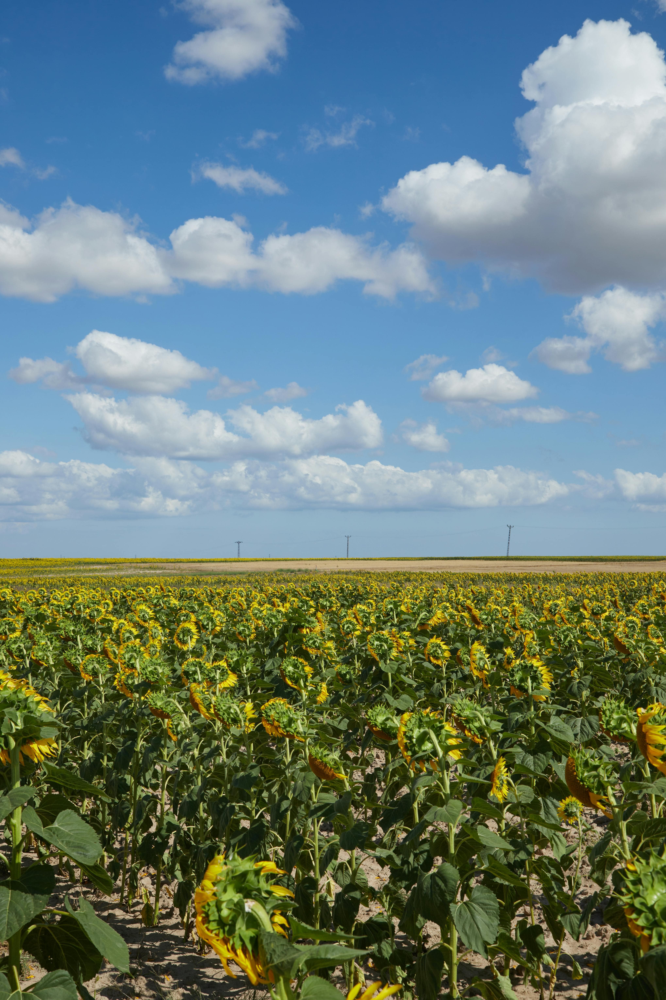

بہار
بہار مارچ میں شروع ہوتی ہے اور مئی تک جاری رہتی ہے۔ یہ پھولوں اور خوشگوار موسم کا وقت ہوتا ہے۔

گرمی
گرمی کا موسم جون سے اگست تک ہوتا ہے، اس دوران درجہ حرارت بہت زیادہ ہوتا ہے اور زیادہ تر دن دھوپ والے ہوتے ہیں۔

خزاں
خزاں ستمبر میں شروع ہوتی ہے اور نومبر تک جاری رہتی ہے۔ درختوں کے پتے جھڑتے ہیں اور موسم ٹھنڈا ہونے لگتا ہے۔

سردی
سردی دسمبر سے فروری تک ہوتی ہے، اس دوران درجہ حرارت کم ہوتا ہے اور بعض علاقوں میں برفباری بھی ہو سکتی ہے۔